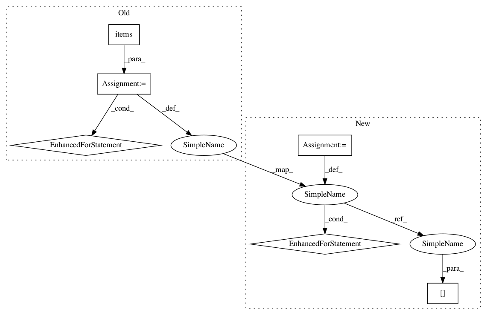

59d4bbaaf06850e2dfb357855f50b05f6c9aadb1,syft/frameworks/torch/fl/utils.py,,scale_model,#Any#Any#,53
Before Change
params = model.named_parameters()
dict_params = dict(params)
with torch.no_grad():
for name, param in dict_params.items():
dict_params[name].set_(dict_params[name].data * scale)
return model
def federated_avg(models: Dict[Any, torch.nn.Module]) -> torch.nn.Module:
After Change
params = model.state_dict().copy()
scale = torch.tensor(scale)
with torch.no_grad():
for name in params:
params[name] = params[name].type_as(scale) * scale
scaled_model = copy.deepcopy(model)
scaled_model.load_state_dict(params, strict=False)
return scaled_model
In pattern: SUPERPATTERN
Frequency: 3
Non-data size: 6
Instances
Project Name: OpenMined/PySyft
Commit Name: 59d4bbaaf06850e2dfb357855f50b05f6c9aadb1
Time: 2020-10-02
Author: skywind29@users.noreply.github.com
File Name: syft/frameworks/torch/fl/utils.py
Class Name:
Method Name: scale_model
Project Name: keras-team/keras
Commit Name: c9642571c23004a10e8bca1a5b1446af399f80db
Time: 2016-02-16
Author: francois.chollet@gmail.com
File Name: keras/callbacks.py
Class Name: History
Method Name: on_batch_end
Project Name: keras-team/keras
Commit Name: f1cd436574b28063f6490ab669e1b357b124e6a8
Time: 2015-07-03
Author: francois.chollet@gmail.com
File Name: keras/callbacks.py
Class Name: BaseLogger
Method Name: on_epoch_end